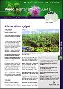

Documents and Resources
Weed Management Guide Weed Management GuideMimosa pigra(pdf 213 KB) Video footage Mimosa pigra TV Commercial (courtesy SunWater Queensland) (wmv 1758 KB) Mimosa pigra Aerial Footage, Northern Territory (courtesy of Weeds CRC) (wmv 7608 KB)
Mimosa pigra Identification
SITE MAP
Australian Weeds Strategy | Weed Identification | Australian Weeds CommitteeTraining, & Materials | About Weeds Australia | Noxious Weeds List | Weed ManagementWeeds of National Significance | State and Territory Contacts
Privacy Statement
Legal Notice